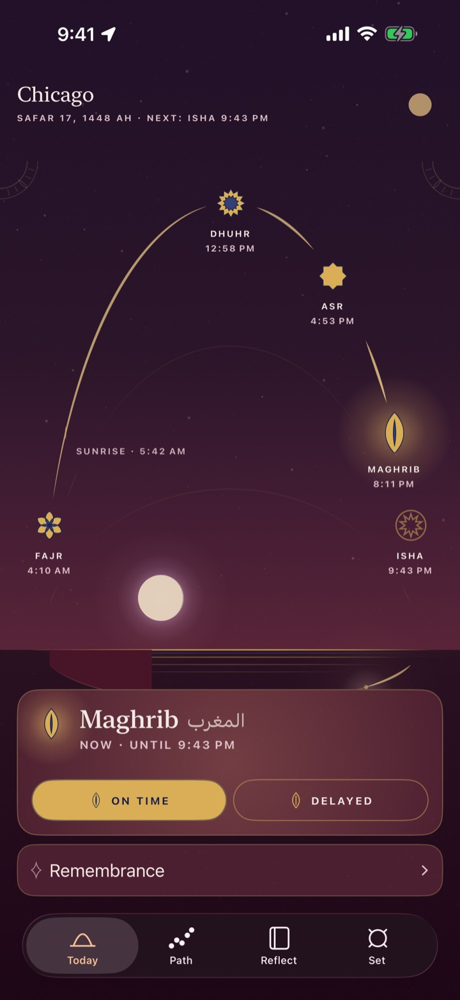
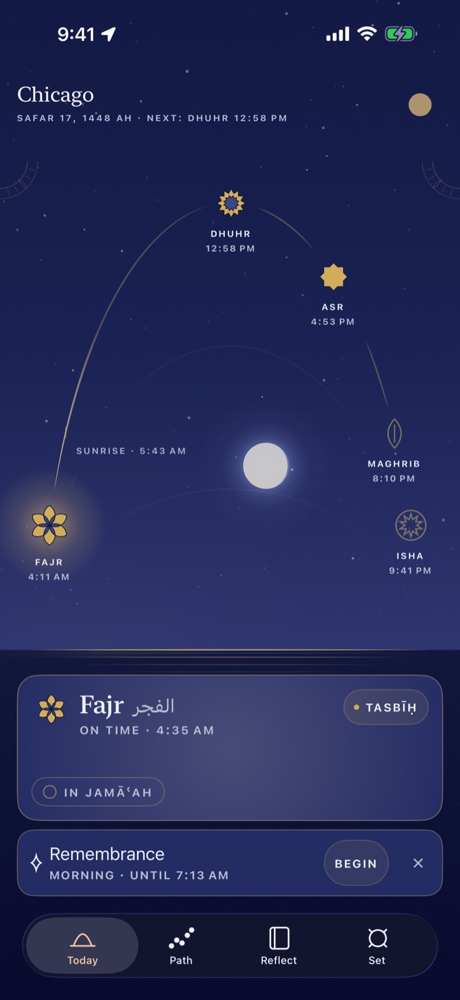
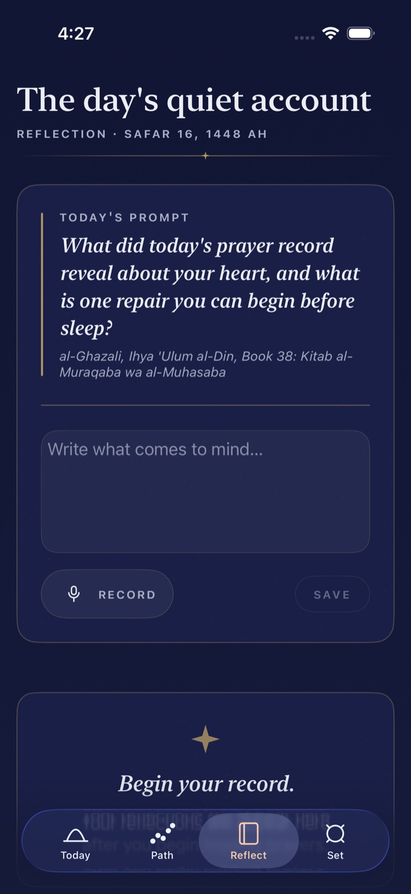
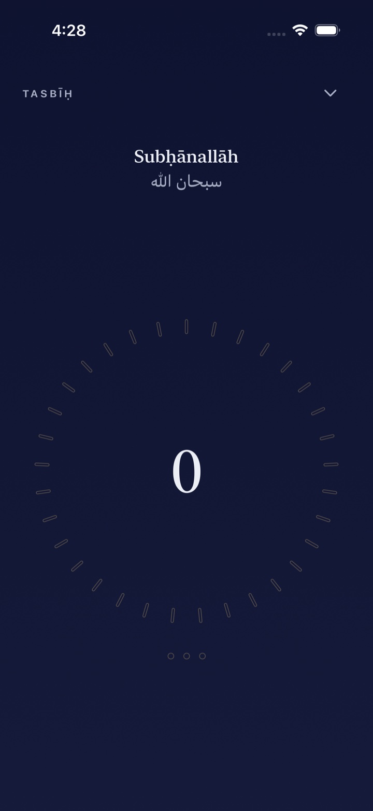
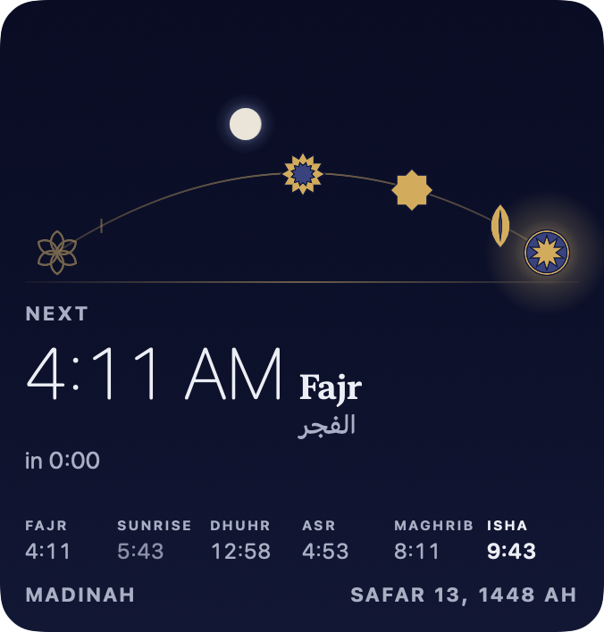
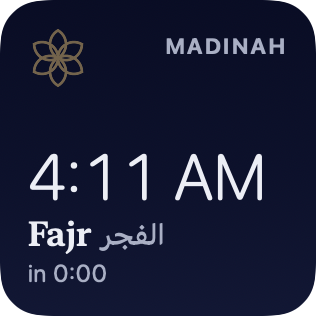
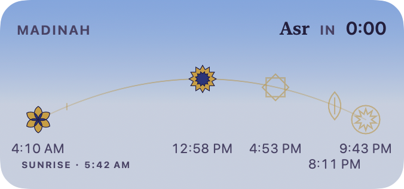

The name
أَنْ تَعْبُدَ اللَّهَ كَأَنَّكَ تَرَاهُ، فَإِنْ لَمْ تَكُنْ تَرَاهُ فَإِنَّهُ يَرَاكَ
To worship Allah as though you see Him; and if you do not see Him, He sees you.
The Prophet ﷺ, asked what iḥsān is. Ṣaḥīḥ Muslim 8.
The app is named for that kind of attention. It tells you the time, keeps what you record, and stays out of the way. There are no streaks to protect and no score to raise, and there is no company on the other end reading your record.
A month of prayer at a glance.
Every day is a column and every prayer a dot. Tap any day to read it or correct it.
There are no streaks and no score. The grid shows what happened and leaves the reading to you.
A sample month ending today. Whatever you record on the card above lands in the last column.
A ledger for what you carry.
Count the prayers and fasts you owe, then make them up beside your daily prayers at a pace you set yourself.
The counts here are invented. Yours stay on your devices.
The direction, drawn rather than pointed at.
A compass that holds true north and marks the qibla on its rim, with the distance to Makkah beneath it.
Drawn here from the same arithmetic the app uses. Drag the ring to turn, as you would turn yourself.
The app, as it is.
Eight frames from the app itself, on real data. Nothing is composited, retouched or staged.

Today, at Maghrib. The day as a single instrument, five prayers on one arc. 
Today, at Fajr. The page follows the sun, from first light to the last third of the night. 
Recording. One tap records a prayer in its window. One more takes it back. 
Path. A month of prayer at a glance, and any day a tap away. 
Repair. A ledger for what you carry, and a pace you set yourself. 
Qibla. The direction, drawn rather than pointed at. 
Reflect. A prompt for the day, and room to write or speak an answer. 
Tasbīḥ. A counter with nothing on it but the count.
The same day, wherever you look.
The arc travels with you. Widgets, the Lock Screen, StandBy and Apple Watch all read from the one record. You can log a prayer from a widget, a Live Activity, your watch or Siri.
- Widgets
- The next prayer, the Hijri day, the day as a strip, or the whole plate with the true phase of the moon.
- Live Activities
- While a prayer’s window is open it waits on the Lock Screen and in the Dynamic Island, with a button to record it.
- Apple Watch
- Times, qibla and one-tap logging on your wrist, with complications for the next prayer.
- Siri and Shortcuts
- Every way of logging goes through the same door, so a prayer is never counted twice.



Also in the app
- Reflections
- Write or speak a few lines after a prayer. Voice notes are transcribed on your phone, and the recording stays on the phone that made it.
- Remembrance
- Morning and evening adhkār, a tasbīḥ counter, and duas for the weather outside your window.
- Masjids nearby
- Find one close to you and keep its jamāʿah times next to your own.
- Fasting, pause and travel
- A log for your fasts, and Pause and Travel modes that set a stretch of days apart. Ihsan does not ask why.
- Your own method
- Choose the calculation method your community follows and the Asr ruling you keep, or set the angles yourself.
- On-device summaries
- Where Apple Intelligence is available, a short summary of your record is written on the phone. Where it is not, nothing appears in its place.
What you record stays yours.
Ihsan has no account, no analytics and no server of its own. Your prayer log lives on your devices and in your private iCloud, where only you can read it. Your location is used in the moment to work out times and direction, and is never written down.
The app makes four kinds of network request. This is all of them.
- A city name. Apple turns your position into “Chicago” so the app can show it.
- Masjids nearby. An Apple Maps search, only while that sheet is open.
- The weather. A reading from Apple, only while the living sky or the weather duas are in use.
- Prayer thresholds. A small settings file from our public GitHub repository. The same file ships inside the app.
None of them carries anything that identifies you.
And this page
This page loads its fonts, scripts and images from its own address and from nowhere else.
No analytics, no fonts from a font service, no embedded video. The prayer times at the top were worked out in your browser; the city was a guess from your clock.